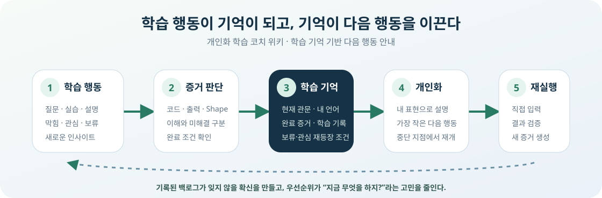

문제는 공부할 내용이 부족한 것이 아니라, 매 순간 무엇을 먼저 해야 하는지 다시 결정해야 한다는 점이었습니다. 새 의문을 바로 따라가면 현재 학습이 끊기고, 미루면 잊을 것 같아 불안했습니다.
학습 속도가 빨라질수록 또 다른 문제가 생겼습니다. 배운 날에는 설명하고 구현할 수 있어도 시간이 지나면 핵심 흐름과 코드가 흐려졌고, 문서를 다시 읽는 것만으로는 기억에서 직접 꺼낼 수 있는지 확인하기 어려웠습니다.
기록이 늘자 정리 자체도 학습을 방해했습니다. 글 하나를 저장할 때마다 기존 문서를 찾고, 새 글인지 보강인지 판단하고, 위키·블로그·프로젝트·지식 지도에 같은 정보를 반복해서 맞추면 공부보다 문서 관리에 더 많은 시간이 들 수 있었습니다.
기존 방식 — 새 의문과 새 기록이 곧 새로운 정리 작업이 됩니다.
학습 방향이 자주 바뀌고, 문서마다 목록과 분류를 반복해서 맞춰야 하며, 중단 뒤에는 어디서 다시 시작할지도 판단해야 합니다.

핵심 목표
이해한 내용과 남은 의문을 함께 기억
확인된 이해와 아직 해결하지 못한 내용을 구분해 다음 대화에서도 이어갑니다.
지금 중요한 학습에 집중
새 관심사는 잃지 않게 기록하되 현재 학습을 임의로 밀어내지 않게 합니다.
중단 지점에서 바로 재개
마지막으로 확인한 내용과 다음 행동을 읽어 이미 끝낸 설명을 반복하지 않습니다.
사용자의 언어로 다시 설명
과거에 사용한 표현과 직접 다룬 예제를 새로운 설명과 실습에 활용합니다.
시간이 지난 뒤에도 기억에서 회수
처음 이해한 근거와 지연 회상 결과를 분리하고, 실제 성공 정도에 따라 다음 확인 간격을 조정합니다.
학습을 끊지 않고 지식으로 축적
검증된 원문을 먼저 보존하고, 문맥 판단과 구조 검증을 거쳐 여러 탐색 화면에서 다시 사용할 수 있게 만듭니다.
주요 기능
다섯 기능이 하나의 학습과 지식 축적 순환을 만듭니다. 공부하면서 생긴 증거와 의문을 기록하고, 핵심 개념은 기억 강화 세션에서 다시 꺼냅니다. 로드맵과 학습 기록으로 지금 할 한 단계를 정하며, 문서 후보는 Markdown 대기열에 자동 축적한 뒤 반영 요청이 있을 때만 일괄 정리합니다.
학습 문서 자동 저장과 심화 백로그
학습 문서는 Markdown 원문으로 자동 저장하고, 지금 필요 없는 심화는 다시 볼 조건과 함께 보관합니다.
기억 강화 세션
AI 엔지니어 성장과 기업 코딩 테스트 합격에 필요한 지식을 우선순위와 간격에 따라 자료 없이 다시 확인합니다.
로드맵·학습 기록 기반 코칭
앞으로 갈 방향과 지금까지 확인한 근거·기억 강화 결과를 함께 읽어 다음 설명과 실습을 정합니다.
대기 문서의 안전한 일괄 반영
“반영하자”는 요청이 있을 때 대기 원문을 신규·보강·보류로 나누고 Markdown 원천과 콘텐츠 메타데이터를 갱신한 뒤 정적 HTML을 다시 생성합니다.
통합 문서 색인과 관계 탐색
한 번 등록한 문서를 여러 목록과 지식 지도에 연결해 필요한 내용을 빠르게 찾습니다.
학습 문서 자동 저장과 심화 백로그
사용자는 질문·설명·실습에 집중합니다. 코딩 에이전트는 다시 사용할 학습 설명을 Markdown 원문으로 자동 저장하고, 현재 흐름에 꼭 필요하지 않은 심화 주제는 잊지 않도록 학습 백로그로 보냅니다.
새 의문이 생겼을 때
지금 알아야 현재 학습을 계속할 수 있는가?
예 — 현재 학습을 막는 내용: 꼭 필요한 범위만 바로 보강한 뒤 원래 학습으로 돌아갑니다.
아니요 — 큰 개념이거나 오래 걸리는 내용: 보류 이유와 다시 볼 조건을 함께 남기고 현재 학습을 계속합니다. 조건이 맞는 시점에는 에이전트가 다시 제안합니다.
실제로 수행한 심화의 위치: 보류 목록에 대기 중인 항목은 로드맵을 복잡하게 만들지 않습니다. 사용자가 백로그에서 하나를 실제로 꺼내 학습을 시작하거나 검증을 마치면, 그때만 연결된 관문 옆에 진행 중 또는 완료된 심화 가지로 나타납니다. 가지는 수행 이력을 보여 주지만 본선의 완료율·현재 관문·다음 행동은 바꾸지 않습니다.
기억 강화 세션
위키에 쌓인 AI 지식과 코딩 테스트 풀이를 자료 없이 다시 꺼내고, 실제 결과에 따라 다음 확인 시점을 조정합니다.
로드맵·학습 기록 기반 코칭
앞으로 갈 방향과 지금까지 확인한 근거를 함께 읽어, 지금 할 한 단계와 다음 설명을 정합니다.
문서의 안전한 직접·일괄 반영
같은 안전장치를 쓰되, 사용 시점에 따라 즉시 반영과 Queue 일괄 반영을 선택합니다. 지금 바로 문서화하라는 요청은 대화에서 만든 임시 Draft를 입력으로 사용하고, 학습 흐름을 끊지 않으려는 내용은 날짜별 pending Queue에 원문 그대로 모읍니다. 두 경로 모두 에이전트가 의미를 판단하고 전용 Writer가 원천을 변경하며, Renderer와 감사 도구가 공개 결과를 검증합니다.
통합 문서 색인과 관계 탐색
한 번 등록한 문서를 위키 계층·블로그·프로젝트·검색·지식 지도에 연결해, 제목이나 관계만 기억해도 다시 찾을 수 있게 합니다.
체계적인 문서 축적
학습 내용을 찾을 수 있는 구조로 쌓습니다.
새로 확인한 설명은 주제와 상위·하위 관계에 따라 기존 문서 체계 안에 연결합니다. 카테고리 하나와 여러 태그를 함께 적용해 기록을 좁히고, 일치한 하위 문서의 상위 경로도 함께 확인할 수 있습니다.
빠른 검색과 연결
기억나는 단어나 개념 관계만으로 필요한 문서에 접근합니다.
전체 문서 검색은 원하는 기록으로 바로 이동하게 하고, 지식 지도는 같은 개념과 연결된 설명을 함께 찾게 합니다. 위키가 커져도 어디서부터 다시 볼지 찾는 시간을 줄입니다. 모든 위키 문서의 제목·설명·등록일·카테고리·부모·태그는 하나의 JSON 레지스트리에 등록하고, 기술 블로그와 프로젝트 목록은 같은 문서의 노출 옵션만 읽습니다. 지식 지도는 별도 관계 JSON에서 문서 경로를 다시 쓰지 않고 레지스트리의 문서 ID를 참조합니다. 따라서 목록과 지도는 목적에 따라 다르게 보이면서도 같은 원문과 메타데이터를 공유합니다.
학습이 이어지는 과정
앞에서 소개한 다섯 기능은 따로 움직이지 않습니다. 한 번의 질문과 실습은 즉시 학습 상태의 근거가 되고, 공개 문서로 발전시킬 긴 설명은 별도의 대기열에 보존됩니다. 기억 강화 결과는 다음 설명을 바꾸고, 사용자가 선택한 시점에 정리된 문서는 다시 다음 학습의 참고 지식이 됩니다.
자동화의 역할과 경계
사용자는 학습 방향과 의미를 결정하고, 코딩 에이전트는 판단·설명·문서화를 보조하며, 전용 도구는 원천 변경을 검증합니다. 이 화면 자체가 대화형 코칭을 수행하는 별도의 백엔드 서비스는 아닙니다. 사용자는 Codex와 같은 코딩 에이전트와 대화하고, 에이전트는 필요한 최종 상태와 교육과정 보강을 판단하지만 로드맵·백로그·학습 기록의 원천 JSON을 직접 덮어쓰지 않습니다. 도구의 실행 코드와 이름·설명·승인 조건·입력 Schema는 실행 가능한 Code-first Registry에서 함께 관리합니다. 에이전트는 list로 이름·도메인·읽기/쓰기·요약만 가볍게 확인하고, 사용할 도구만 describe해 전체 Schema와 안전 경계를 읽은 뒤 call합니다. 허용된 명령만 받는 이 Registry가 변경 계획을 검증·적용하고, 로드맵의 Hero·세부 절·완료 조건·진행선까지 정적 HTML로 다시 생성합니다.
학습 기록을 신뢰할 수 있는 이유
자동 기록과 다음 행동 제안은 많이 남기는 것보다, 실제로 확인한 이해와 시간이 지난 뒤의 유지 여부를 정확하게 기억할 때 가치가 있습니다. 문서 자동화도 많이 생성하는 것보다 원문의 문맥과 구조를 보존해야 의미가 있습니다. 그래서 학습 근거, 지연 회상, 다음 행동, 문서 반영, 공개 기록을 서로 다른 기준으로 확인합니다.